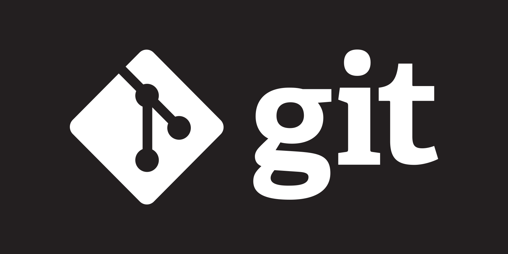
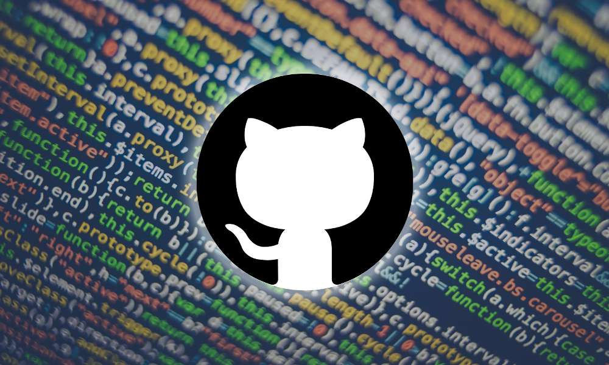

Herramientas
Utilidades para tu curso
Notas rapidas
Escribe aqui ideas para practicar:
- Cambiar colores en CSS.
- Anadir una nueva seccion.
- Editar este texto y hacer commit.
- ESto es una ampliación para ver cambios en ramas.
Reto del dia
Crea una rama llamada mejora-diseno, cambia el estilo de una tarjeta y guarda el cambio con un commit.
Chuleta
Comandos de Git
Ver estado
git statusAnadir cambios
git add .Crear commit
git commit -m "mensaje"Ver ramas
git branchCambiar de rama
git switch nombre-ramaSubir a GitHub
git pushPractica
Flujo basico de trabajo
Crea una rama
Trabaja los cambios nuevos en una rama separada para practicar sin tocar la principal.
Edita archivos
Cambia el HTML o el CSS, revisa el resultado y comprueba el estado con Git.
Guarda el cambio
Anade los archivos al seguimiento y crea un commit con un mensaje claro.
Sube a GitHub
Publica la rama en GitHub para revisar tus cambios desde el repositorio remoto.
Galería
Capturas del proyecto


Aprendizaje
Recursos utiles
Agenda
| Dia | Practica | Comando clave |
|---|---|---|
| 1 | Crear repositorio y archivos | git init |
| 2 | Guardar cambios | git commit |
| 3 | Trabajar con ramas | git switch -c |